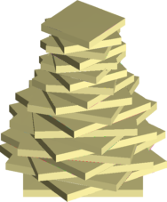
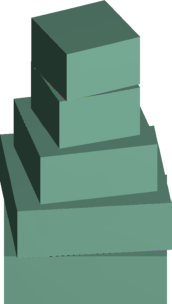

Quantifying Shape Complexity
SHREC 2021 Track


Collections
-
In the first collection, we consider synthetically acquired noisy cubes and spheres.
Downloads:
-
c-.zip
-
c+.zip
-
s-.zip
-
s+.zip
-
The
second collection
consists of abstract shapes and is made up of two subcollections each composed of 25 shapes.
-
The third part consists of the categorized shapes of the
Princeton Segmentation Benchmark
(Chen et al., "A Benchmark for 3D Mesh Segmentation", TOG, 28.3, 2009.
Each of these collections can be considered as seeking a different aspect of shape complexity.
Organizers
- M. Ferhat Arslan 1
- Alexandros Haridis 2
- Paul L. Rosin 3
- Sibel Tari 1
1: Middle East Technical University, Department of Computer Engineering
2: Massachusetts Institute of Technology, Department of Architecture
3: Cardiff University, School of Computer Science & Informatics